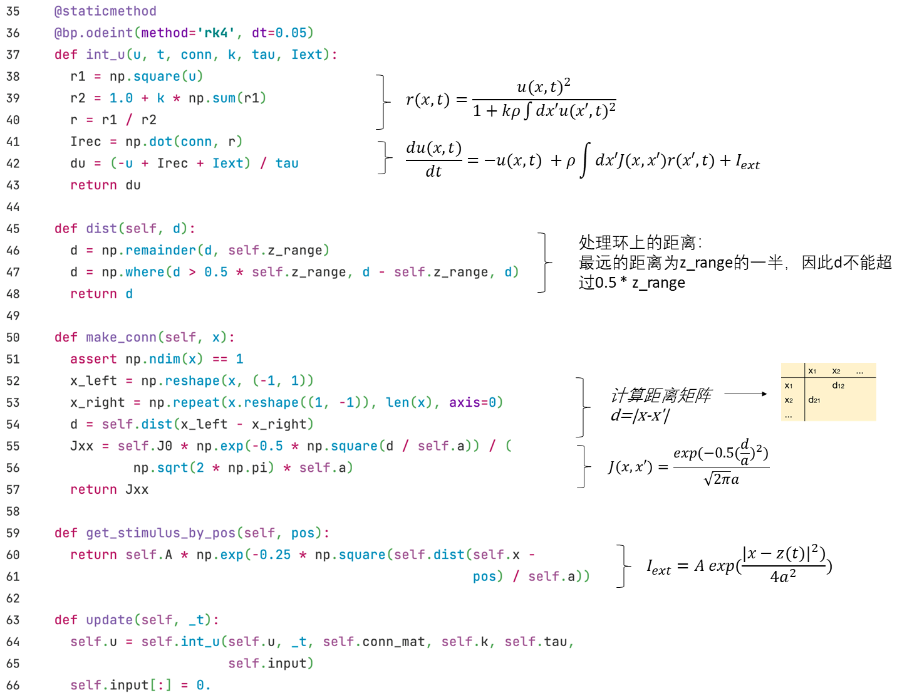

3.2 连续吸引子模型（CANN）
这里我们将介绍发放率模型的另一个例子——连续吸引子神经网络（CANN）。图3-6呈现了一维CANN的结构。

神经元的突触总输入的动力学方程如下：
其中x表示神经元的参数空间位点，为神经元(x')的发放率，由以下公式给出:
而神经元(x)和(x')之间的兴奋性连接强度由高斯函数给出:
外界输入与位置有关，公式如下：
用BrainPy实现的代码如下，我们通过继承bp.NeuGroup来创建一个CANN1D的类。


这里我们用函数dist与make_conn来计算两群神经元之间的连接强度。其中dist函数用来处理环上的距离。
接下来我们可以调用刚才定义的get_stimulus_by_pos方法获取外界输入电流大小。例如在简单的群体编码（population coding）中，我们给一个pos=0的外界输入，并按以下方式运行：
cann = CANN1D(num=512, k=0.1, monitors=['u'])
I1 = cann.get_stimulus_by_pos(0.)
Iext, duration = bp.inputs.constant_current([(0., 1.), (I1, 8.), (0., 8.)])
cann.run(duration=duration, inputs=('input', Iext))
我们写一个plot_animate的函数来方便重复调用bp.visualize.animate_1D画结果图。
# 定义函数
def plot_animate(frame_step=5, frame_delay=50):
bp.visualize.animate_1D(dynamical_vars=[{'ys': cann.mon.u, 'xs': cann.x,
'legend': 'u'}, {'ys': Iext,
'xs': cann.x, 'legend': 'Iext'}],
frame_step=frame_step, frame_delay=frame_delay,
show=True)
# 调用函数
plot_animate(frame_step=1, frame_delay=100)

可以看到，的形状编码了外界输入的形状。
现在我们给外界输入加上随机噪声，看看的形状如何变化。
cann = CANN1D(num=512, k=8.1, monitors=['u'])
dur1, dur2, dur3 = 10., 30., 0.
num1 = int(dur1 / bp.backend.get_dt())
num2 = int(dur2 / bp.backend.get_dt())
num3 = int(dur3 / bp.backend.get_dt())
Iext = np.zeros((num1 + num2 + num3,) + cann.size)
Iext[:num1] = cann.get_stimulus_by_pos(0.5)
Iext[num1:num1 + num2] = cann.get_stimulus_by_pos(0.)
Iext[num1:num1 + num2] += 0.1 * cann.A * np.random.randn(num2, *cann.size)
cann.run(duration=dur1 + dur2 + dur3, inputs=('input', Iext))
plot_animate()

我们可以看到的形状保持一个类似高斯的钟形，这表明CANN可以进行模板匹配。
接下来我们用np.linspace函数来产生不同的位置，得到随时间平移的输入，我们将会看到跟随着外界输入移动，即平滑跟踪。
cann = CANN1D(num=512, k=8.1, monitors=['u'])
dur1, dur2, dur3 = 20., 20., 20.
num1 = int(dur1 / bp.backend.get_dt())
num2 = int(dur2 / bp.backend.get_dt())
num3 = int(dur3 / bp.backend.get_dt())
position = np.zeros(num1 + num2 + num3)
position[num1: num1 + num2] = np.linspace(0., 12., num2)
position[num1 + num2:] = 12.
position = position.reshape((-1, 1))
Iext = cann.get_stimulus_by_pos(position)
cann.run(duration=dur1 + dur2 + dur3, inputs=('input', Iext))
plot_animate()

参考资料
[1] Wu, Si, Kosuke Hamaguchi, and Shun-ichi Amari. "Dynamics and computation of continuous attractors." Neural computation20.4 (2008): 994-1025.